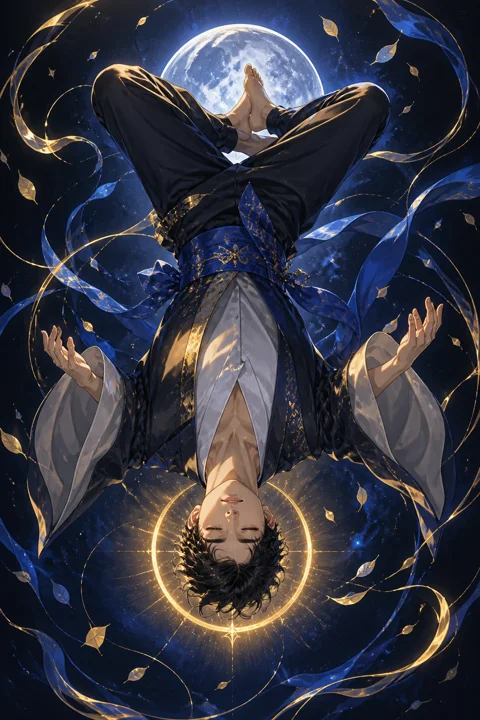

XII 매달린 사람 카드 — 거꾸로 볼 때 보이는 새 길
매달린 사람 카드 한눈에 보기
매달린 사람 카드 상징 읽기

동네보살의 카드 그림은 전통 라이더–웨이트 덱의 뜻을 새 그림으로 옮긴 것입니다. 아래 상징 설명은 전통 덱의 그림을 기준으로 합니다.
한 사람이 살아 있는 나무로 된 십자 모양 기둥에 한쪽 발목이 묶인 채 거꾸로 매달려 있습니다. 나무에 잎이 돋아 있다는 것은 이 멈춤이 죽은 시간이 아니라 무언가 자라나는 시간임을 뜻합니다.
매달린 사람의 표정은 고통스럽지 않고 오히려 평온합니다. 억지로 붙잡힌 것이 아니라 스스로 받아들인 멈춤이라는 점이 이 카드의 열쇠입니다.
머리 주위를 감싼 둥근 후광은 뒤집힌 자세에서 얻은 깨달음과 영감을 상징합니다.
묶이지 않은 다리는 다른 다리 뒤로 접혀 숫자 4 모양을 만들고, 두 팔은 등 뒤로 모여 있습니다. 손을 쓰지 않는 자세는 행동을 멈추고 마음으로 상황을 바라볼 때라는 메시지를 전합니다. 매달린 사람이 입은 푸른 윗옷과 붉은 바지는 차분한 지혜와 살아 있는 열정을 함께 뜻하며, 노란 신발과 후광은 깨달음의 빛을 강조합니다.
매달린 사람 카드 정방향 뜻
정방향의 매달린 사람은 일이 멈춰 선 것처럼 보이는 시기에 그 멈춤을 어떻게 쓰느냐가 중요하다고 말합니다. 애써도 진전이 없을 때 더 세게 밀어붙이기보다 잠시 손을 놓고 상황을 다른 각도에서 바라보면 놓치고 있던 답이 보입니다.
이 카드의 기다림은 체념이 아니라 준비입니다. 당장의 이득을 조금 양보하거나 익숙한 고집을 내려놓는 선택이 나중에 더 큰 흐름을 여는 경우가 많습니다.
평소라면 받아들이지 않았을 의견이나 방식이 지금은 오히려 해결의 실마리가 될 수 있습니다. 남들이 보기에 느리고 답답해 보여도 괜찮습니다. 거꾸로 매달린 시간이 끝나면 세상은 같아도 당신이 보는 방식은 달라져 있을 것입니다. 기다리는 동안 마음이 조급해진다면 지금 배우고 있는 것이 무엇인지 하나씩 적어 보는 것도 좋은 방법입니다.
매달린 사람 카드 역방향 뜻
역방향의 매달린 사람은 기다림이 의미를 잃고 정체가 되어 버린 상황을 짚습니다. 언젠가 나아지겠지 하며 버티고 있지만 실제로는 아무것도 달라지지 않는 관계나 일이 있는지 돌아보세요.
남을 위해 참고 희생해 왔는데 돌아오는 것 없이 지치기만 했다면, 이제는 그 역할을 계속할지 스스로 물어볼 때입니다. 희생이 누구를 위한 것인지 분명하지 않다면 그것은 미덕보다 습관에 가깝습니다.
반대로 이 방향은 오랜 망설임 끝에 드디어 움직일 준비가 되었다는 신호로도 읽힙니다. 충분히 생각했다면 더 이상의 고민은 도움이 되지 않습니다. 매듭을 풀고 내려와 작은 행동 하나를 시작하는 것이 지금 필요한 용기입니다. 내려온다는 것은 포기가 아니라 더 나은 자리로 옮겨 가는 선택일 수 있습니다. 결정한 뒤에는 뒤돌아보며 스스로를 탓하지 않아도 됩니다.
연애에서 매달린 사람 카드
솔로라면 사랑을 바라보는 기준을 한 번 뒤집어 볼 때입니다. 늘 비슷한 유형에게 끌리고 비슷하게 끝났다면, 그동안 눈길을 주지 않던 사람에게서 뜻밖의 편안함을 발견할 수 있습니다. 서둘러 인연을 찾기보다 나의 연애 방식을 돌아보는 시간이 다음 만남을 달라지게 합니다.
연애 중이라면 관계가 제자리걸음처럼 느껴질 수 있습니다. 진전이 없다고 조급하게 결론을 재촉하면 오히려 거리가 생기기 쉽습니다. 상대의 입장에 서서 같은 상황을 바라보면 서운함이 이해로 바뀌는 지점이 보입니다. 다만 한쪽만 계속 양보하며 버티는 관계라면, 그 희생을 솔직하게 털어놓을 필요도 있습니다. 사랑에서 한발 물러서 보는 여유가 오히려 두 사람 사이의 공기를 가볍게 바꿔 줄 수 있습니다. 조급함 대신 호기심으로 상대를 바라보세요.
재회·속마음 질문에서 매달린 사람 카드
재회 질문에서 매달린 사람이 나오면 지금은 결론이 나지 않은 채 멈춰 있는 구간으로 읽습니다. 상대도 마음을 정하지 못하고 관계를 어떻게 바라봐야 할지 고민하는 중일 수 있습니다. 지금 애써 끌어당기면 오히려 멀어지기 쉬우니, 연락을 재촉하기보다 헤어진 이유를 상대의 눈으로 다시 바라보는 시간을 가지세요. 관점이 바뀌면 다가갈 방법도 달라집니다. 상대가 먼저 움직이기를 기다리는 동안 당신의 일상과 마음을 돌보는 데 힘을 쓰세요. 기다림 끝에 다시 마주하게 된다면 예전과는 다른 눈으로 서로를 볼 수 있을 것입니다.
일·금전에서 매달린 사람 카드
업무에서는 결재가 늦어지거나 프로젝트가 보류되는 등 내 힘으로 속도를 낼 수 없는 상황이 생기기 쉽습니다. 이럴 때 초조해하기보다 그동안 미뤄 둔 자료 정리나 기술 보완에 시간을 쓰면 재개될 때 앞서 나갈 수 있습니다. 막힌 문제는 전혀 다른 분야의 방식을 빌려 오면 풀리기도 합니다.
금전 면에서는 새로운 지출이나 큰 결정을 잠시 미루는 편이 안전합니다. 지금 당장 손해처럼 보이는 선택이 길게 보면 합리적일 수 있으니, 짧은 기간의 숫자만 보고 판단하지 마세요. 상사나 동료의 결정이 답답하게 느껴진다면 그 입장에서 어떤 제약이 있었을지 한 번 헤아려 보세요. 관점을 바꿔 제안하면 멈춰 있던 일이 다시 움직일 계기가 생길 수 있습니다.
매달린 사람 카드는 예일까 아니오일까
매달린 사람은 지금 서둘러 움직이기보다 멈춰서 관점을 바꾸라는 카드라 당장의 답은 아니오 또는 아직에 가깝습니다. 역방향이면 기다림이 충분히 길었으니 이제 스스로 결단해 내려와도 된다는 신호일 수 있습니다.
자주 묻는 질문
매달린 사람 카드 역방향은 나쁜 뜻인가요?
역방향의 매달린 사람은 기다림이 의미를 잃고 정체가 되어 버린 상황을 짚습니다. 언젠가 나아지겠지 하며 버티고 있지만 실제로는 아무것도 달라지지 않는 관계나 일이 있는지 돌아보세요.
매달린 사람 카드가 연애 질문에 나오면요?
솔로라면 사랑을 바라보는 기준을 한 번 뒤집어 볼 때입니다. 늘 비슷한 유형에게 끌리고 비슷하게 끝났다면, 그동안 눈길을 주지 않던 사람에게서 뜻밖의 편안함을 발견할 수 있습니다. 서둘러 인연을 찾기보다 나의 연애 방식을 돌아보는 시간이 다음 만남을 달라지게 합니다.
타로 카드는 어떻게 뽑나요?
타로 카드 페이지에서 카드를 섞으면 메이저 아르카나 22장이 펼쳐집니다. 마음이 가는 세 장을 고르면 과거·현재·미래 자리에 놓이고, 한 장씩 뒤집어 자리와 방향에 맞는 풀이를 읽습니다. 정방향과 역방향은 섞는 순간 정해집니다.